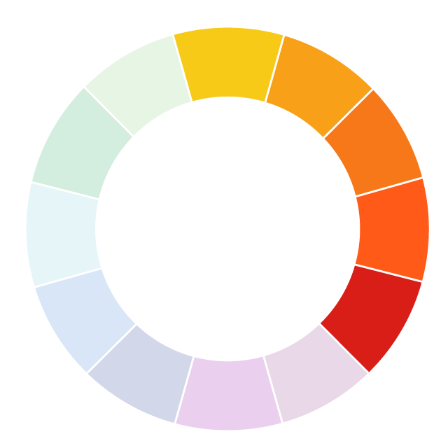
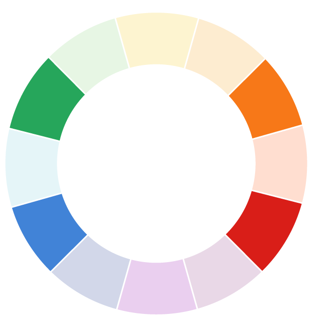

Использование цветов и их сочетаний в коммерческих и бизнес-целях основывается на теории цвета или психологическом и эмоциональном восприятии цвета человеком. Грамотное цветовое оформление гораздо больше, чем просто украшение. Именно цветовое решение в дизайне страниц способно сыграть решающую роль в достижении поставленных перед интернет-ресурсом целей путем коррекции восприятия пользователями веб-страниц.
В общем и целом теория цвета в веб-дизайне базируется на трех составляющих, открывающих бездну возможностей и широкое поле для экспериментов для дизайнера при разработке интерфейса:
Использование резко контрастирующих друг с другом цветов и оттенков позволяет подчеркивать остроту, пикантность, важность отдельных элементов или информации. Контрастные оттенки, то есть диаметрально противоположные, выбираются с помощью цветового круга. Для того, чтобы подобрать контрастирующую пару для того или иного оттенка, достаточно выбрать соответствующий сегмент на цветовом круге, после чего выбрать соответствующий сегмент на противоположной стороне.
Тему цвета всё время пытаются теоретизировать — составлять цветовые круги, определять цвета, которые сочетаются между собой и которые не сочетаются. С одной стороны, это естественно, потому что цвет — это чистая физика, а физика — это свод законов.
С другой стороны, цвет имеет экстраординарную способность влиять на настроение, эмоции и восприятие. Кроме того, он - культурные и персональные значения, на уровне сознания и подсознания. Поэтому законы цвета очень пластичны. Можно следовать канонам и получить невнятный проект, а можно нарушить все правила и сделать почти шедевр.
Стандартные темы лекций по цветоведению это: цвета, дополняющие, аналогичные, холодные и тёплые и их сочетания. В целом, всё это можно уместить на одну картинку.
Три чистых цвета. Все остальные получаются путём сложения двух основных цветов.
Все оттенки цветов сине-зелёного спектра (фиолетовый относится к синему спектру)
Все оттенки жёлто-красного спектра
Цвета, расположенные на круге рядом с друг другом
Противоположные цвета. На круге расположены напротив друг друга (контрастные)
Цвет плюс два соседних цвета его комплементарного цвета
Три цвета распределённые на круге равномерно
Четыре комплементарных цвета
